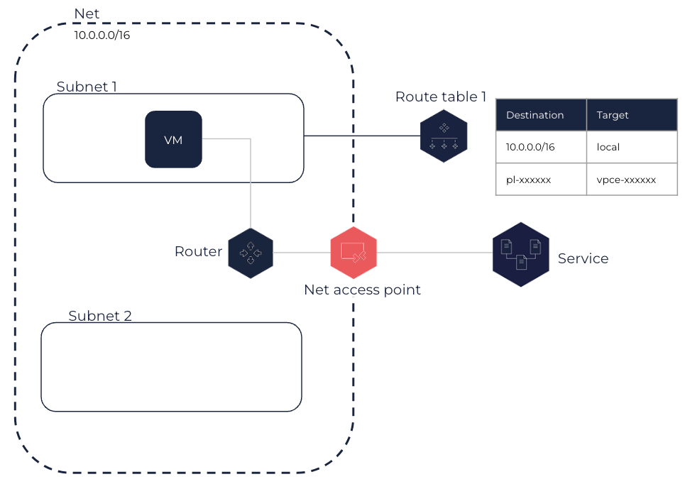

About Net Access Points
Net access points enable virtual machines (VMs) placed in a Net to access another OUTSCALE service using a private connection, which avoids using a VPN connection or a DirectLink connection.
For more information about OUTSCALE services, see About the APIs and OUTSCALE Object Storage (OOS).
Net access points enable you to create a private connection between your Net and another OUTSCALE service within the same Region as the Net. Using the Net access point, VMs in your Net communicate with resources of the other service using their IPs. When using this solution, network traffic remains within 3DS OUTSCALE network.
|
When a Net access point is created, a public IP is automatically allocated to your account and used for the Net access point. This public IP is not connected to the internet. It is counted in your quota, but it is not billed. |
When creating a Net access point, you specify the name of the service prefix list, which is a list of network prefixes used by this service in CIDR notation. Each prefix list is composed of an ID in the pl-xxxxxxxx format, and a name to identify the service it is associated with in the com.outscale.<REGION>.<SERVICE> format.
You also need to specify one or more route tables to associate with the Net access point, when creating it or once created. The appropriate routes are then automatically added to these route tables to route the traffic of their associated Subnets destined to the service to the Net access point. These routes have the corresponding prefix list ID as destination, representing the range of IPs used by the service, and the Net access point ID as target. All VMs placed in these Subnets therefore use the Net access point to access the service within the Net Region.

|
The default security group for your Net allows all outbound traffic. If you created a custom security group or modified the outbound rule of the default security group, you need to add an outbound rule allowing traffic to the appropriate service. To do so, you can use its prefix list ID. For more information, see Adding Rules to a Security Group.
You cannot transfer a Net access point to another Net. You need to create a new one and, if needed delete the previous Net access point.
A Net access point can be in one of the following states:
-
Pending: The creation process is in progress.
-
Available: The Net access point is created and can be used to forward traffic to an OUTSCALE service.
-
Deleting: The deletion process is in progress.
-
Deleted: The Net access point is deleted.
Related Pages